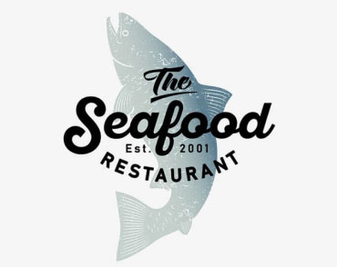

-

Technocrack
Strona internetowa -

Grafika New Orlean vs Golden Star
Dizajn -

Restauracja Seafood
Aplikacja -

Projekt Prime
Marketing -

Projekt Boxes
Aplikacja -

Inspiration has no Borders
Strona internetowa -

Magazyn Limited Edition
Dizajn -

Projekt LAB
Marketing -
Growing Business
Aplikacja